Sistema Electoral Estudiantil · CTP AIRA, Pedregoso (Buenos Aires, Puntarenas, Costa Rica)
Informe técnico · 4 de noviembre de 2026 · Rama develop · Commit base b0fd178
El flujo completo (activar urna → buscar estudiante → asignar → votar → liberar → sellar conteo) funciona de punta a
punta y fue verificado con un navegador real. La capacidad medida es de ~35 votos/segundo, unas 800 veces la demanda
del colegio. Sin embargo, la configuración actual es de desarrollo (APP_DEBUG=true, SQLite, credenciales
por defecto) y debe corregirse antes de exponerlo a estudiantes.
| Área | Acción realizada |
|---|---|
| Logs | Revisión de storage/logs/laravel.log y log del servidor embebido |
| Configuración | Auditoría de .env y comando php artisan app:check |
| Seguridad | Búsqueda de credenciales hardcodeadas, permisos de escritura, CSRF, throttling, roles |
| Casos límite | Suite automatizada de 93 pruebas |
| Carga | 4 escenarios HTTP concurrentes con sesión JRV real |
| Recursos | Muestreo de CPU/RSS del servidor, tamaño de base de datos |
| Ciclo real | Simulación de votante con Chromium + Playwright y capturas de pantalla |
Resultado de php artisan app:check antes de las correcciones:
| Verificación | Estado | Detalle |
|---|---|---|
| APP_ENV | FALLA | local |
| APP_DEBUG | FALLA | true (expone errores y stack traces) |
| APP_KEY | OK | definida |
| APP_URL HTTPS | FALLA | http://localhost |
| SESSION_ENCRYPT | FALLA | false |
| Base de datos | OK | sqlite |
| storage escribible | OK | Sí |
| bootstrap/cache escribible | OK | Sí |
| Credenciales por defecto | FALLA | admin, tee, jrv con contraseña = usuario |
| # | Hallazgo | Severidad | Corrección aplicada |
|---|---|---|---|
| 1 | Se podía votar con la elección cerrada | Bloqueante | VoteController exige eleccion_abierta = 1 (HTTP 423) |
| 2 | Se aceptaba cualquier party_id | Bloqueante | Validación de partido existente y activo (HTTP 422) |
| 3 | La urna podía activarse con la elección cerrada | Bloqueante | KioskoController valida el estado de la elección |
| 4 | Credenciales por defecto en el seeder | Bloqueante | Comando app:create-admin; app:check las detecta |
| 5 | El kiosco no cargaba su JavaScript | Bloqueante | Se añadió voting.js al layout; prueba de regresión en KioscoTest |
| 6 | Contraseña inicial sin cambio obligatorio | Alto | Middleware password.changed + pantalla de cambio |
| 7 | Deprecations PHP 8.4 en parámetros nullable | Medio | ?string y Collection|array|null |
| 8 | Throttle de voto fijo en 60/min | Medio | Configurable con VOTE_THROTTLE |
No se encontraron credenciales hardcodeadas en el código de la aplicación. Las únicas credenciales fijas están en el seeder de desarrollo, que no debe ejecutarse en producción.
| Control | Resultado |
|---|---|
| Dependencias vulnerables | 23 avisos corregidos · Laravel 12.71 · composer audit sin hallazgos |
| Operación sin internet | 0 recursos externos; Tailwind, Chart.js, iconos y tipografías locales |
| Cabeceras de seguridad | CSP, X-Frame-Options, nosniff, Referrer-Policy, Permissions-Policy |
| Contraseñas | Argon2id + cambio obligatorio inicial |
| API legada | Padrón, votación y urnas exigen sesión y rol |
| Acceso por mesa | La JRV no puede consultar ni registrar estudiantes de otra mesa |
| CSV / Excel | CSV injection neutralizada, límite de 10 000 filas, tipo y tamaño validados |
| RLS PostgreSQL | Probado en PostgreSQL 16: JRV mesa 1 ve 1 urna y 4 estudiantes; admin ve 3 urnas y 8; votos invisibles para JRV |
| Tiempo real | Reverb local con canales privados y respaldo por polling |
| Caso | Resultado esperado | Estado |
|---|---|---|
| Doble voto del mismo estudiante | HTTP 409 | OK |
| Estudiante inexistente | HTTP 404 | OK |
| Partido inexistente o inactivo | HTTP 422 | OK |
| Voto con elección cerrada | HTTP 423 | OK |
| Urna de otra mesa | Rechazo | OK |
| Contraseña JRV incorrecta | Rechazo sin sesión | OK |
| Contraseña pendiente de cambio | Bloqueo de API y urna | OK |
| Edición del padrón con elección abierta | HTTP 423 | OK |
| Alteración del conteo tras el sello | Detectada | OK |
| Desbloqueo de estudiante | Anula su voto | OK |
Suite automatizada: 93 pruebas, 169 aserciones, todas en verde.
Servidor embebido de PHP con 4 workers sobre SQLite, sesión JRV real y votos por HTTP. La primera corrida usó el límite de producción (60/min por IP) y demostró que el throttle funciona; las siguientes lo elevaron para medir el techo técnico.
| Escenario | Solicitudes | Concurrencia | Éxito | Latencia media | p95 | Duración | Throughput |
|---|---|---|---|---|---|---|---|
| Throttle por defecto | 100 | 10 | 60 (40 × 429) | — | — | — | — |
| Carga media | 100 | 10 | 100 % | 0,252 s | 0,324 s | ~3 s | ~33/s |
| Carga alta | 300 | 20 | 100 % | 0,485 s | 0,541 s | 8,0 s | ~37/s |
| Carga alta | 300 | 50 | 100 % | 1,175 s | 1,309 s | 8,4 s | ~36/s |
| Estrés | 200 | 100 | 100 % | 2,008 s | 2,733 s | 5,9 s | ~34/s |
| Recurso | Valor máximo | Interpretación |
|---|---|---|
| Memoria RSS (4 workers) | ~68 MB | Muy por debajo de 1 GB; cabe en cualquier equipo |
| CPU | 45 % | Sin saturación incluso a 50 concurrentes |
| Base de datos | 212–312 KB | 600 votos ocuparían menos de 1 MB |
| Errores 5xx | 0 | No se observaron fallos de aplicación |
artisan serve): no es para producción. Recomendación: Nginx + PHP-FPM.VOTE_THROTTLE.Se automatizó el ciclo completo con Chromium y se capturó cada pantalla. El voto se registró en 344 ms.
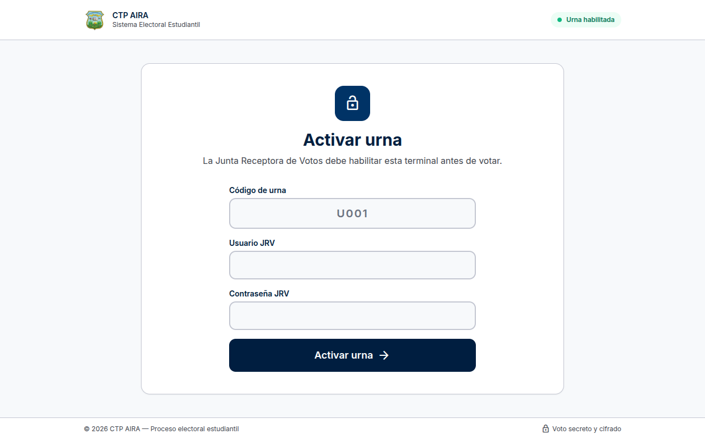
1. Activación de la urna con código y credencial JRV.
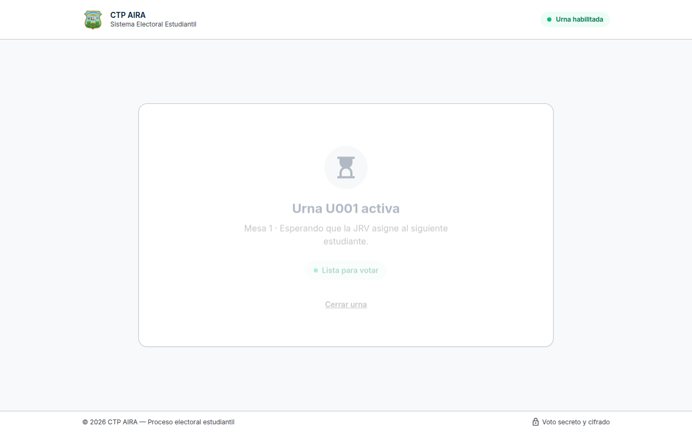
2. Urna activa en espera de asignación.
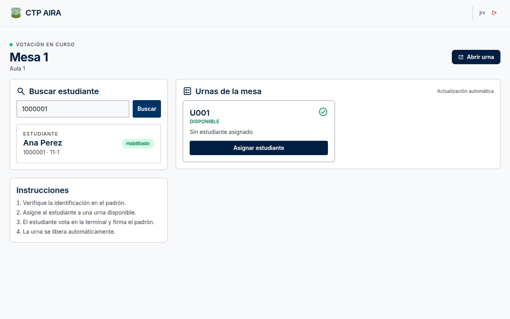
3. La JRV busca al estudiante en el padrón.
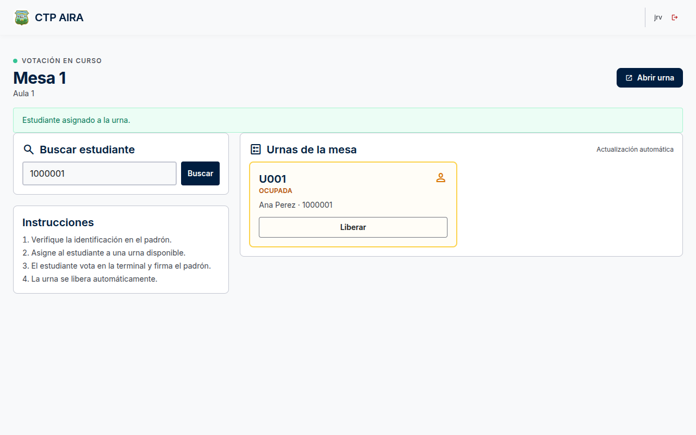
4. Estudiante asignado a la urna.
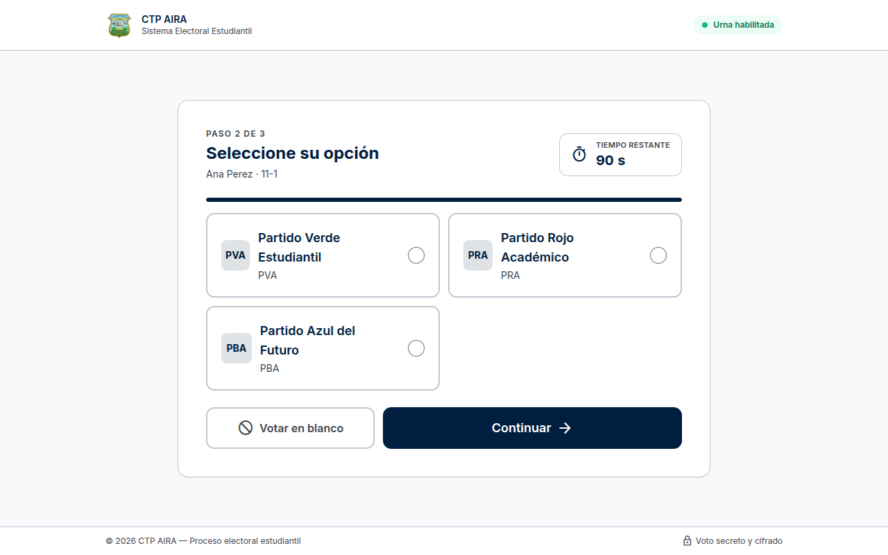
5. Papeleta con los partidos y cronómetro.
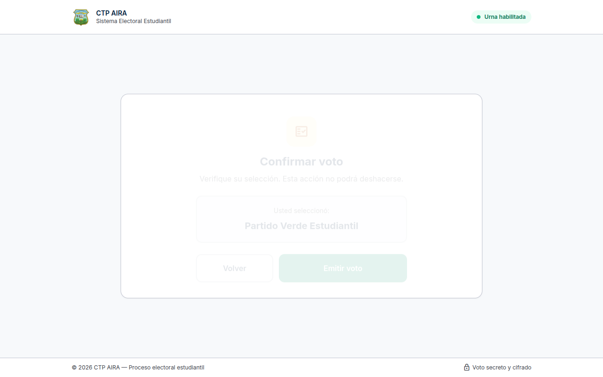
6. Confirmación del voto.
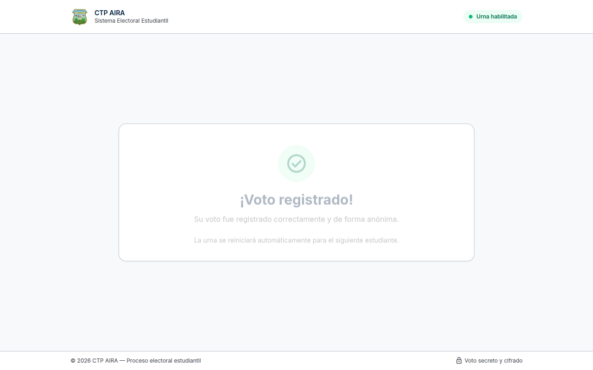
7. Voto registrado correctamente.
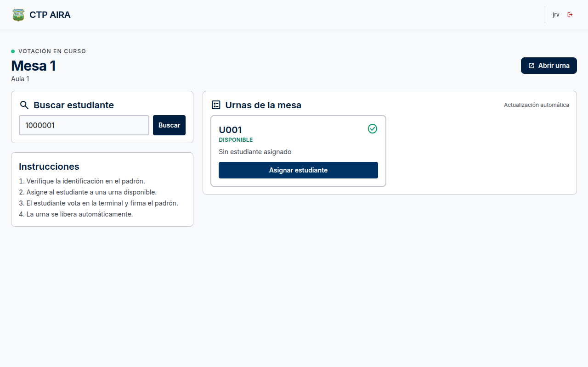
8. La urna se libera automáticamente.
Se automatizaron tres navegadores simultáneos: PC1 registro, PC2 aprobación y PC3 urna, comunicados por WebSocket local (Reverb).
| Paso | Terminal | Resultado | Latencia |
|---|---|---|---|
| 1 | PC3 | Urna activada y en espera | — |
| 2 | PC1 | Solicitud de voto enviada | 0,63 s |
| 3 | PC2 | Recibe la solicitud en la cola | ≤ 3 s |
| 4 | PC1 | Recibe la aprobación con la urna asignada | 0,71 s |
| 5 | PC3 | Muestra la papeleta | ≤ 2,5 s |
| 6 | PC3 | Voto registrado | 0,56 s |
| 7 | PC1 | Recibe el estado «votó» | 0,62 s |
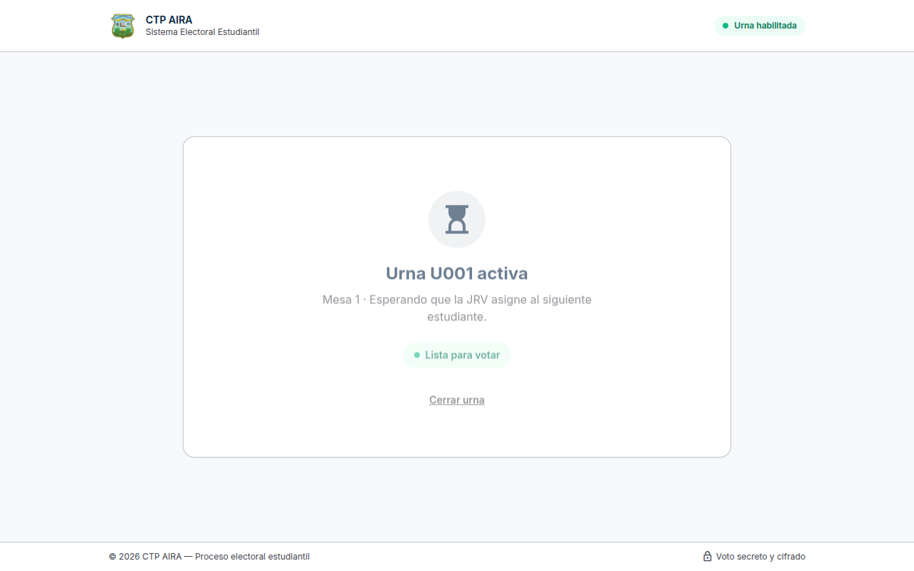
PC3: urna activa en espera.
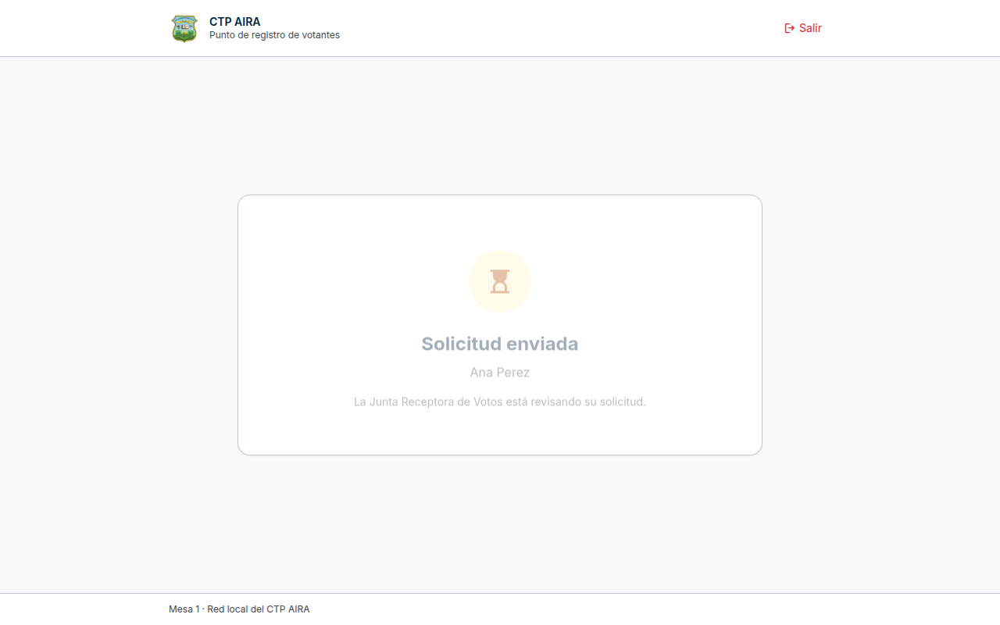
PC1: solicitud enviada.
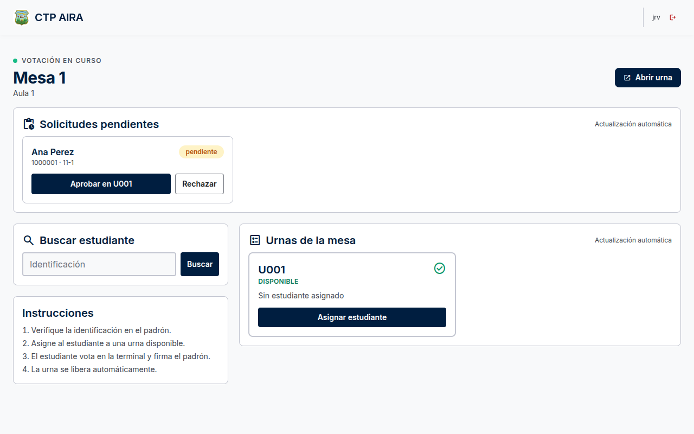
PC2: solicitud en la cola.
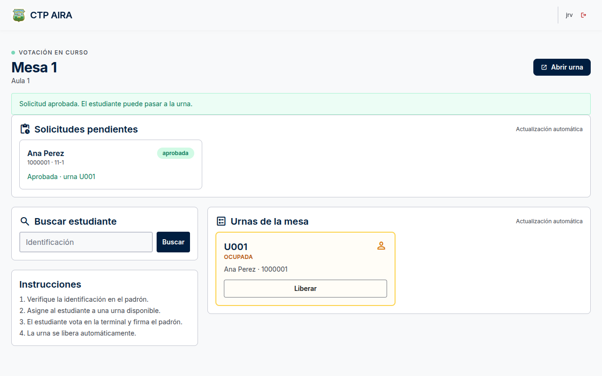
PC2: solicitud aprobada.
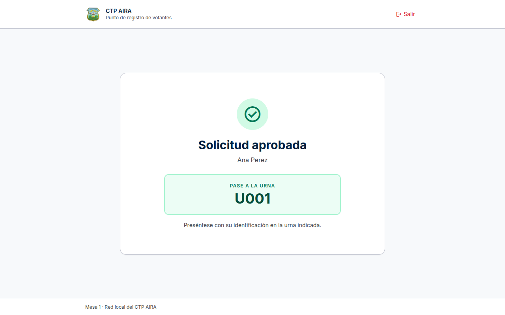
PC1: aprobación y urna asignada.
PC3: papeleta habilitada.
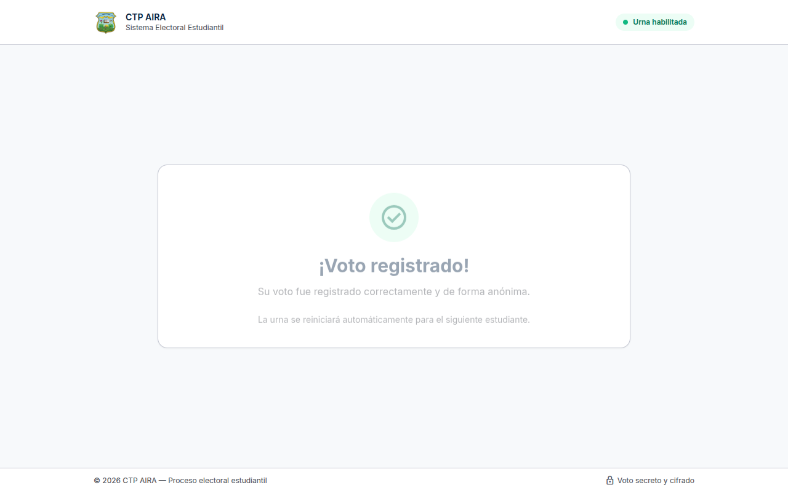
PC3: voto registrado.
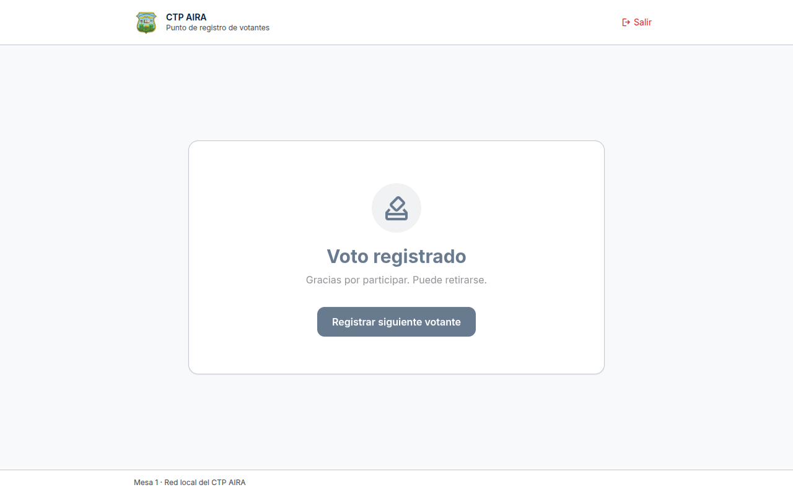
PC1: voto confirmado.
| Estudiantes | Urnas | Tiempo por voto | Duración estimada | Votos/s necesarios | Margen vs. medido |
|---|---|---|---|---|---|
| 400 | 2 | 90 s | 5 h 00 min | 0,022 | ~1.500× |
| 400 | 4 | 90 s | 2 h 30 min | 0,044 | ~750× |
| 600 | 4 | 90 s | 3 h 45 min | 0,044 | ~750× |
| 800 | 6 | 90 s | 3 h 20 min | 0,067 | ~500× |
| 800 | 4 | 60 s | 3 h 20 min | 0,067 | ~500× |
Secure).| # | Requisito | Estado | Acción |
|---|---|---|---|
| 1 | Flujo completo de votación | CUMPLE | Verificado con navegador real |
| 2 | Integridad del voto (un voto por estudiante) | CUMPLE | Restricción única en base de datos |
| 3 | Bloqueo de voto con elección cerrada | CUMPLE | HTTP 423 |
| 4 | Validación de partido | CUMPLE | HTTP 422 |
| 5 | Asignación y liberación de urna | CUMPLE | E2E verificado |
| 6 | Bloqueo de padrón en votación | CUMPLE | Middleware activo |
| 7 | Sello e integridad del conteo | CUMPLE | SHA-256 por mesa |
| 8 | Casos límite | CUMPLE | 93 pruebas |
| 9 | Prueba de carga | CUMPLE | ~35 votos/s sin errores 5xx |
| 10 | Uso de recursos | CUMPLE | 68 MB RAM, CPU < 50 % |
| 11 | Credenciales hardcodeadas en código | CUMPLE | Ninguna en la aplicación |
| 12 | Credenciales por defecto eliminadas | PENDIENTE | Ejecutar app:create-admin y borrar admin/tee/jrv de prueba |
| 13 | APP_ENV=production y APP_DEBUG=false | PENDIENTE | Usar .env.production.example |
| 14 | HTTPS y cookies seguras | PENDIENTE | Certificado + SESSION_SECURE_COOKIE=true |
| 15 | Base de datos MySQL/PostgreSQL | PENDIENTE | Migrar antes del evento |
| 16 | Servidor web de producción | PENDIENTE | Nginx + PHP-FPM |
| 17 | Respaldos automáticos | PENDIENTE | Programar y probar restauración |
| 18 | Matrícula real del centro | PENDIENTE | Confirmar con el MEP para dimensionar urnas |
| 19 | Dependencias sin vulnerabilidades | CUMPLE | composer audit limpio |
| 20 | Funciona sin internet | CUMPLE | Assets locales |
| 21 | Cabeceras de seguridad | CUMPLE | Middleware activo |
| 22 | Contraseñas con Argon2id | CUMPLE | Hash verificado |
| 23 | API protegida | CUMPLE | Pruebas de 401 |
| 24 | CSV/Excel sin inyección | CUMPLE | Pruebas unitarias y de exportación |
| 25 | RLS real en base de datos | CUMPLE | PostgreSQL 16 con políticas por mesa |
| Acción | Comando |
|---|---|
| Verificar configuración | php artisan app:check |
| Crear administrador seguro | php artisan app:create-admin director |
| Sellar y verificar conteo | php artisan tally:verify --seal |
| Prueba de carga | ./scripts/stress-vote.sh http://servidor 100 10 STRESS |
| Simulación de votante | node scripts/e2e-voter.mjs http://servidor |
Evidencias completas en docs/produccion/evidencias/: capturas del ciclo, resultado E2E en JSON y
resumen de carga. Este informe se generó automáticamente a partir de las pruebas ejecutadas el 4 de noviembre de 2026.